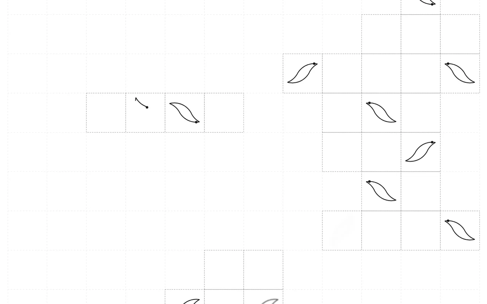
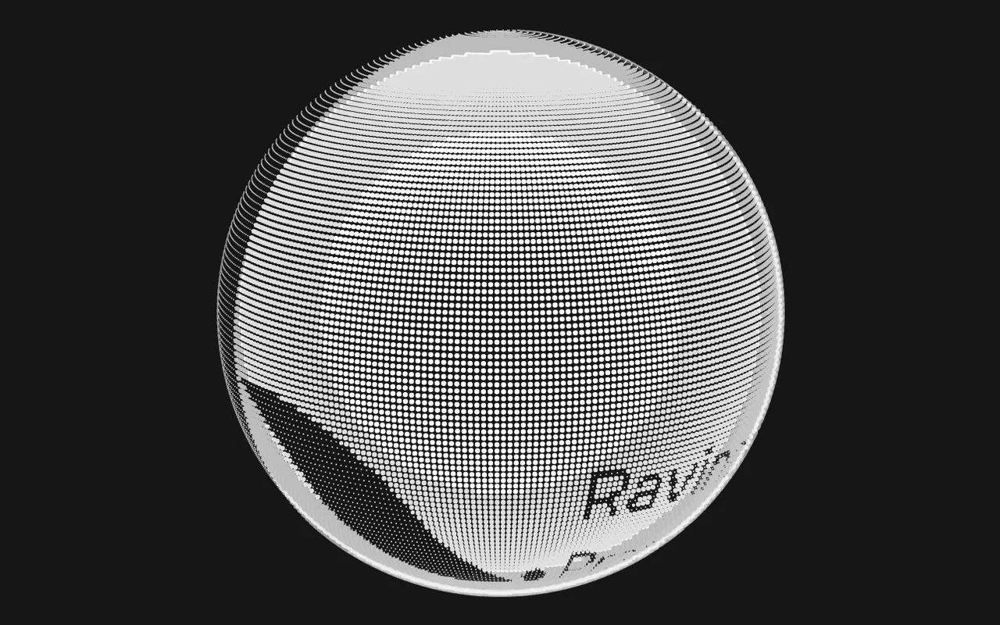
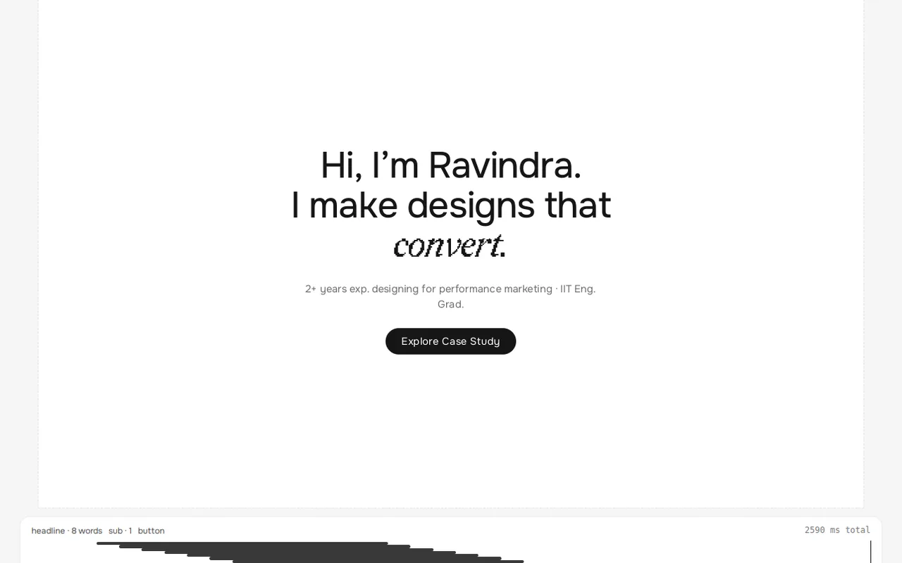
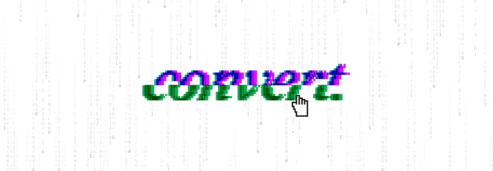

ToolsIn tools
Tools
The generators that make heyrav's brand assets from the master paths. Each one exports PNG, WebM or the exact CSS it previews.
 Line FieldThe mark as hairline ribbons, isometric or perspective, with click ripples.
Line FieldThe mark as hairline ribbons, isometric or perspective, with click ripples.

Grid PensTiles and pens drawing the D, the swash and arcs. Exports animated SVG.
Dot MatrixHalftone or ASCII, flat, wrapped or on a globe, with sweep and scan.
StaggerThe hero entrance on a gantt timeline with a bezier editor. Exports the CSS it previews.
GlitchThe hero tear, code rain and pixel hand. The CSS export keeps the two-half 46/54 clip.How they connect to the system
| System piece | Tool |
|---|---|
| Brand applications | Line Field, Dot Matrix, Grid Pens - all draw the master SVG paths, never a redrawing. |
| Motion, Scroll reveal | Stagger tunes delays and curves and exports them as CSS on the system's easing tokens. |
| Hero hint | Glitch - the --g-a/-b/-c hues are the only colour the tools offer by name. |
| Imagery | Case illustrations and thumbnails. |
| Tool shell | All five share one kit: the rail, controls and dock documented here. |
The tools are hosted separately from this documentation; their UI is documented under Tool shell and the components marked In tools.